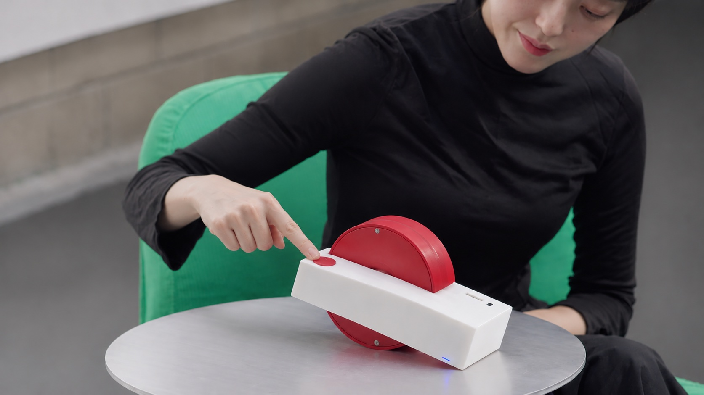
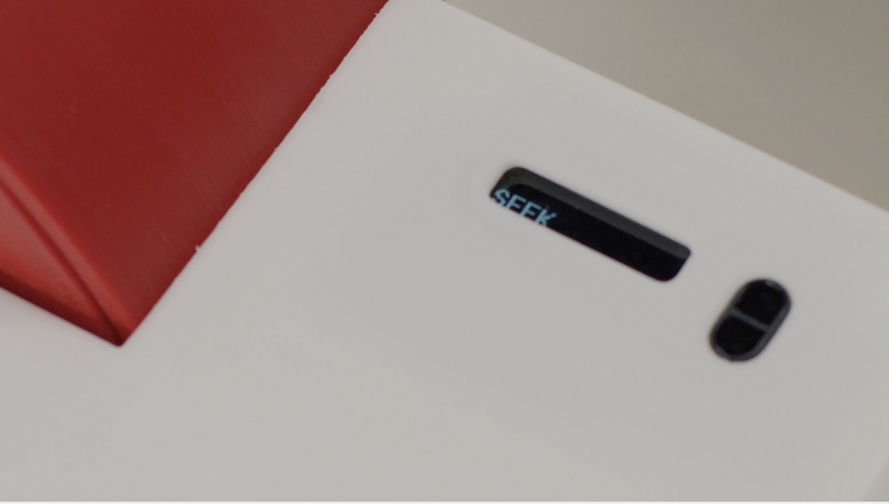
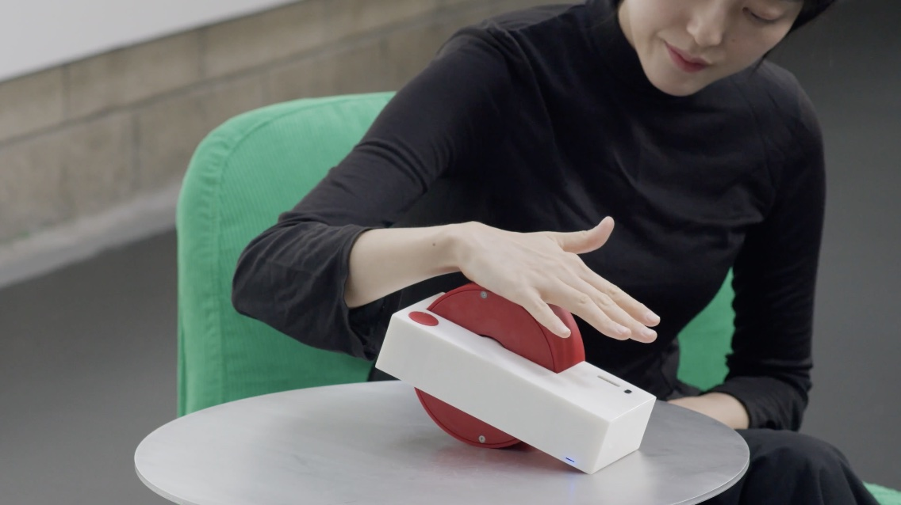
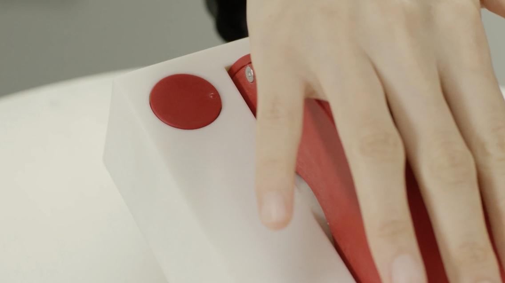
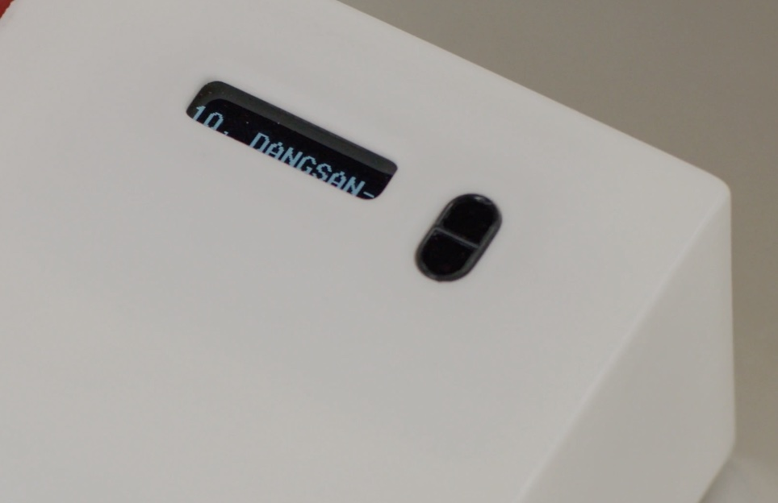
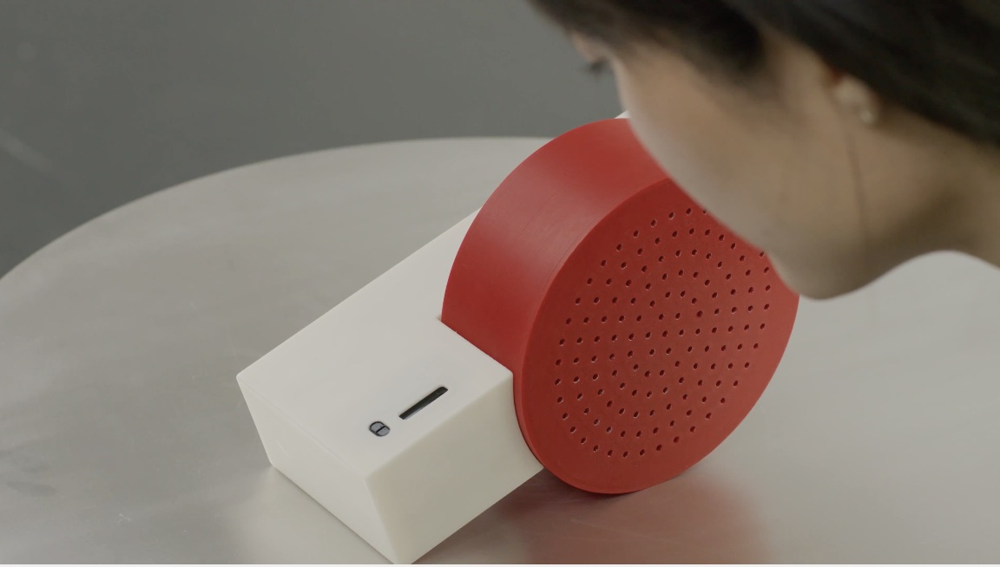
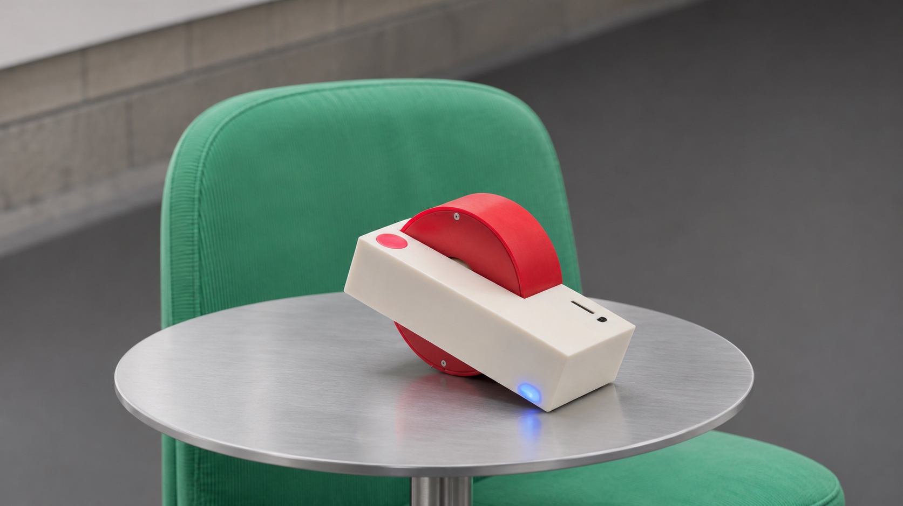

플레이어 (NEO Product) 사용 매뉴얼
켜기
1. 전원 켜기
빨간 버튼을 손가락으로 '딸깍' 소리가 날 때까지 돌립니다. 그보다 더 돌리면 볼륨이 조정됩니다.

2. 액정 확인
대략 23초 뒤 상단의 작고 긴 액정 창에 seek...이 뜹니다.
[이미지: 액정 창 00000]

소리 찾기
3. 휠 돌리기

켜고 나서 대략 45초쯤 기다린 뒤, 큰 원형의 빨간 휠을 돌립니다. 라디오 주파수를 맞추듯이 돌리면 노이즈가 납니다.
계속 돌리면 '띵' 소리와 함께 액정 창에 주소가 뜨고, 몽환적인 소리가 나는 구간이 나옵니다. 이때 볼륨을 적당히 맞춥니다.

4. 장소의 주소가 뜨는 구간은 3곳
사라져 가는 공간의 주소는 모두 3곳에 있습니다.


작은 액정 화면 쪽으로 점점 가까이 가면서 바라보고 있으면 소리는 아주 천천히 원래 소리가 돌아온다.
(30초 이상 걸린다. 일부러 본래의 소리시간성으로 돌아오는 데 시간이 걸리게 하는 게 의도)
VIP 시연 팁
손님이 오기 5분 전쯤 전원만 미리 켜 두세요. (30분 전에도 OK) 50초 뒤 소리가 제대로 나는지 확인하고 볼륨만 줄여 두면 시연할 때 편합니다.
평소에는 전원 오프.
전원 확인 LED
전원이 들어왔는지 확인하려면 아래의 파란색 부분을 확인하세요. (배터리 잔량이 LED 칸으로 표시됨.)

LED